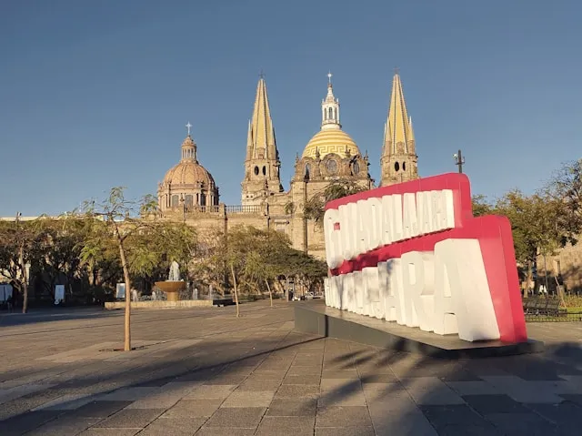

Juan Carlos Mena Osorio
About Me

I was born and raised in Santiago, Chile and I live with my wife and children in Guadalajara, Jalisco Mexico. I am currently working as a Lead Data Engineer at a consulting firm.
Guadalajara, Jalisco Mexico
Guadalajara is the capital of the Jalisco State in Mexico. Because Mariachi was born here some people might say that Guadalajara is the most Mexican city in Mexico.
Web Dev Resources
- Dev.to Community
- Smashing Magazine
- CSS Tricks
- W3 Schools
- Udemy
- Lorem Picsum Image Placeholder